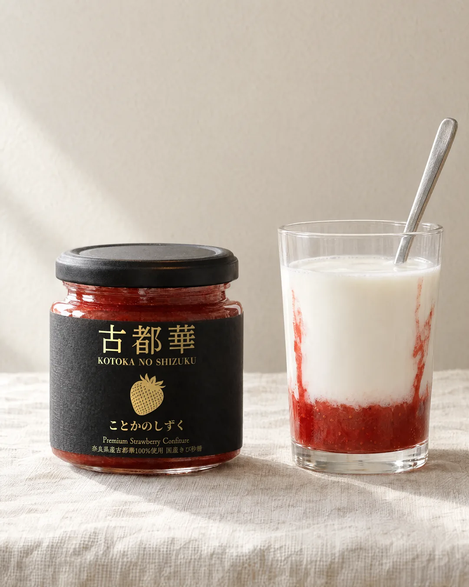
古都華のしずく
1瓶に古都華を30〜40個分使っています。
奈良県のいちご「古都華（ことか）」を、
一年中楽しめるコンフィチュールにしました。
牛乳に混ぜるといちごミルクに、
アイスにかけるといちごソースになります。
奈良市のふるさと納税で、
1本（寄附金額10,000円）と箱入りの2本セット（22,000円）を選べます。
飲みものにも
デザートにも使えます
古都華のしずくは、ジャムでもソースでもないコンフィチュールです。
古都華らしい華やかな香りと濃厚なうまみがあり、口当たりは裏ごししたようになめらかです。
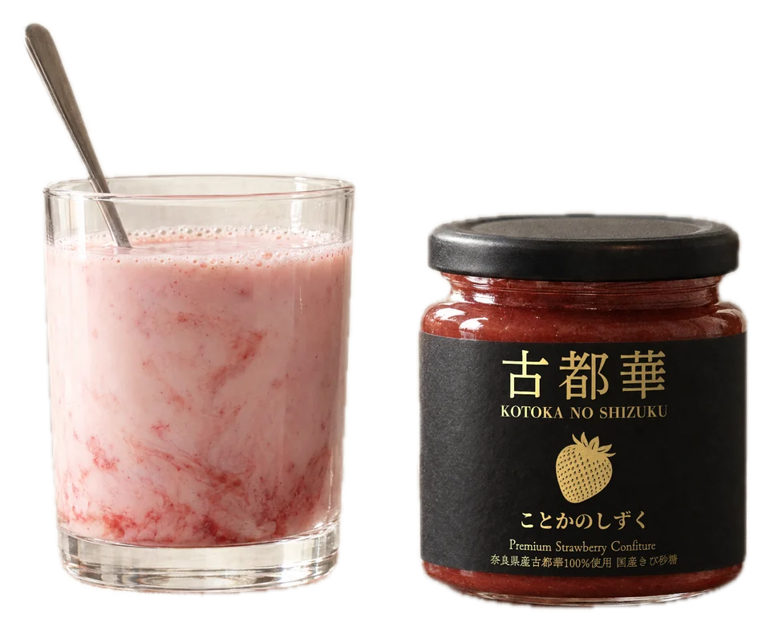
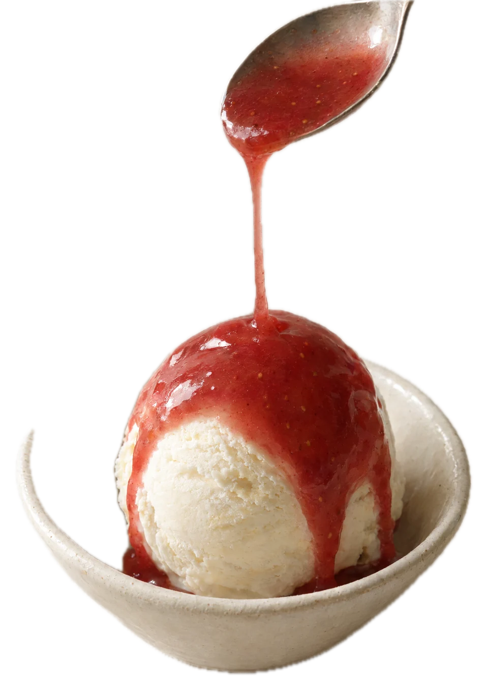
奈良市中町の「Re;BU10（リブート）」では、
古都華のしずくを使ったメニューを出しています。
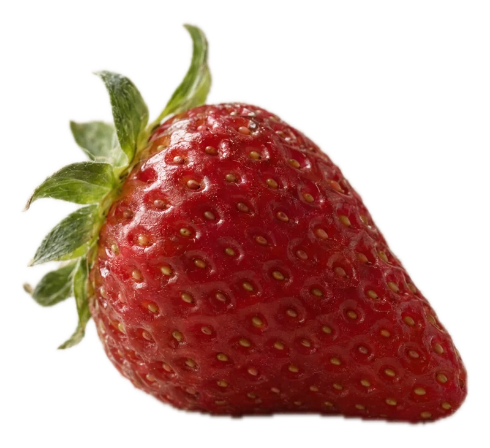
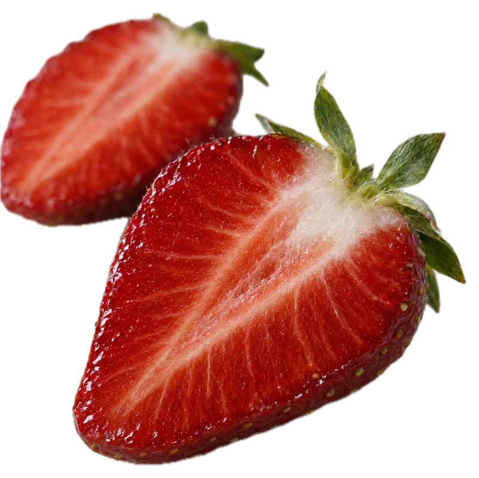
画像はイメージです。
奈良県産の古都華でつくっています
- 原料
- いちごは、すべて奈良県産の古都華です。
1瓶に30〜40個分が詰まっています。 - 選び方
- 出荷の規格に合うかどうかにかかわらず、
品質の高いものだけを選んでいます。 - つくる場所
- 農家さんやJAの協力を得て、
奈良市の工場でつくっています。
古都華は、「いつ食べても美味しいイチゴ」を目指して奈良県が開発したいちごです。奈良県によると、栽培されているのは奈良県内だけです。生の果実は甘みが強く、ほどよい酸味と華やかな香りがあり、表面は濃いルビー色でつやがあります。
古都華は病気に弱く、一株から採れる実の数も多くありません。試験栽培のあと一度は栽培が見送られましたが、直売所では売れ残らず、試食会でシェフに称賛され、「古都華」の名前が付いたケーキやパフェがお店に並ぶようになりました（育成者の寄稿による）。
古都華の収穫は、12月中旬から5月中旬までです。その風味を一年中楽しめるように、コンフィチュールにしました。
生で食べたときにはないうまみを、加工で引き出しています。
ずっと真夜中でいいのに。
特別公演祭 LEGACY ZOMBIE LABO
「文禍伝雷」奈良・平城京
約25秒に1杯売れたいちごミルク
※2026年10月10日・11日、平城宮跡歴史公園の祭エリアで、計18時間に2,600杯（販売者調べ）。販売時間で割った平均です。
- いちごミルク
- 2,600杯
- 使った牛乳（植村牧場）
- 600リットル
- コラボの瓶
- 1,850瓶以上
祭エリアでは、古都華のしずくと奈良・植村牧場の牛乳でつくったいちごミルクを販売しました。出店は、主催の方が工場を訪ねてくださって決まりました。同じブースでは、いちごアイス990個とパンナコッタ300個も売れました。
公演にあわせて、「文禍伝雷」のオリジナルパッケージの瓶「古都華のしずく × ZUTOMAYO」もつくりました。会場と通販などで1,850瓶以上が売れ、販売を終えています。
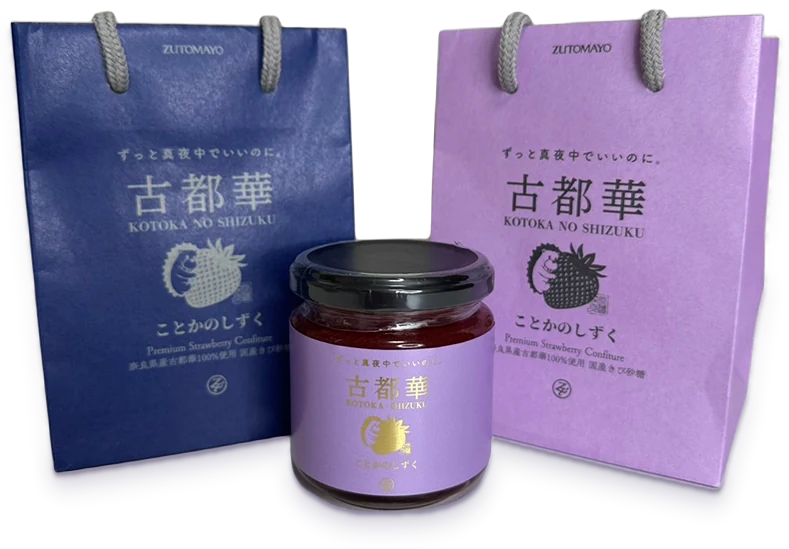
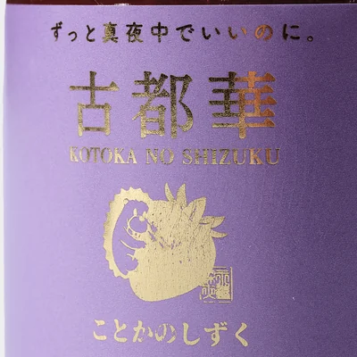
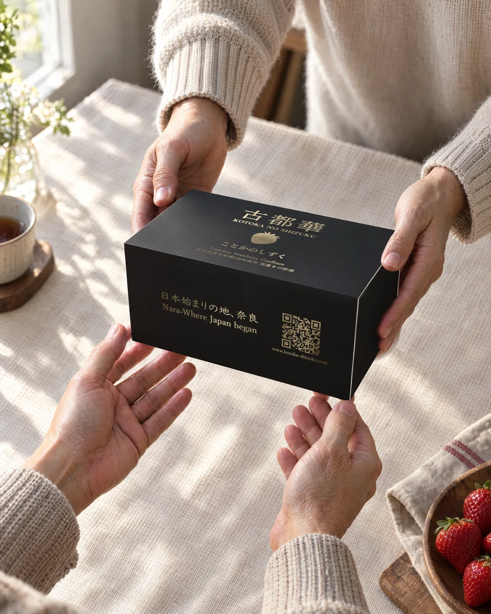
手土産・贈りもの
黒地に金の箔押しをした箱に、180gの瓶が2本入っています。紙袋も付いています。箱も、デザインから印刷まで奈良で手がけました。箱の外寸は、横約153mm、奥行き約89mm、高さ約74mmです。
手土産や季節のごあいさつ、会社からの贈りものにお使いいただけます。箱の前面のQRコードからこのページを開けるので、受け取った方もいちごミルクのつくり方やレシピを確かめられます。
2本入りの箱は、JR奈良駅の奈良県アンテナショップ「奈良のうまいものプラザ」で販売しています。
開ける前は直射日光と高温多湿を避けて保存し、開けたあとは冷蔵庫で保存して、できるだけお早めにお召し上がりください。開封前の賞味期限は製造日から12か月で、瓶の下部に記載しています。
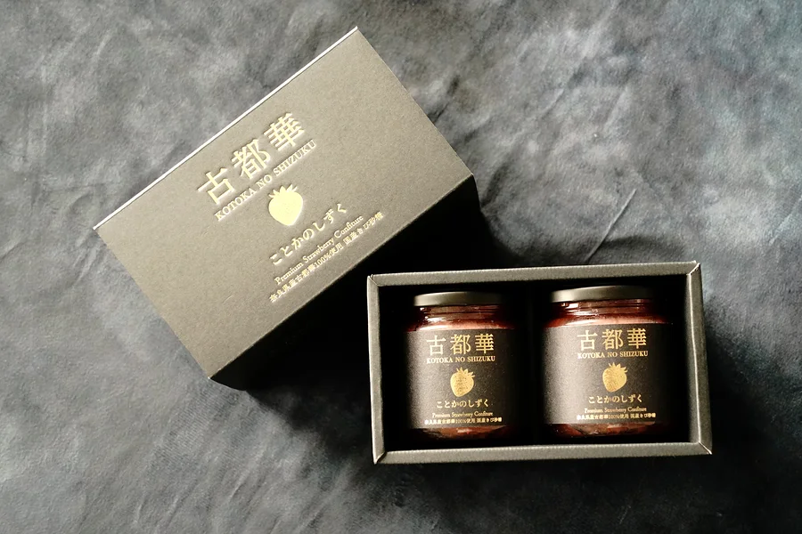
ふるさと納税では、贈答用の箱と袋に入った2本セットも選べます。
ふるさと納税の申し込み先を見るご購入方法とふるさと納税
ふるさと納税
奈良市の返礼品で、次の2つから選べます。どちらもレシピカードが付き、常温配送です（2026年11月11日時点の掲載ページによる）。
- 1本
- 180g入り1本を簡易包装でお届けします。寄附金額は10,000円です。楽天ふるさと納税とau PAY ふるさと納税のほか、ふるさとチョイスでも申し込めます。
- 2本セット
- 180g入り2本を、贈答用の箱と袋に入れてお届けします。寄附金額は22,000円です。楽天ふるさと納税とふるさとチョイスで申し込めます。
取扱店舗
JR奈良駅の奈良県アンテナショップ「奈良のうまいものプラザ」で、瓶と2本入りの箱を販売しています。
オンラインストア
ただいま準備中です。
味わえるお店
奈良市中町の「Re;BU10（リブート）」で、古都華のしずくを使ったメニューを出しています。
2026年11月14日から、ANAKUMA CAFE で古都華のしずくを使ったいちごミルクを味わえます。
お問い合わせ
贈りものとしてまとめてご注文したい方や、ご質問のある方は、メールでお問い合わせください。
いちごミルクのつくり方
古都華のしずく1に対して、
冷たい牛乳を4〜5の割合で混ぜます。
グラスに古都華のしずくを入れます。
冷たい牛乳を注ぎます。
よく混ぜたらできあがりです。
割合はお好みで調整してください。
開けたあとの瓶は、冷蔵庫で保存してください。
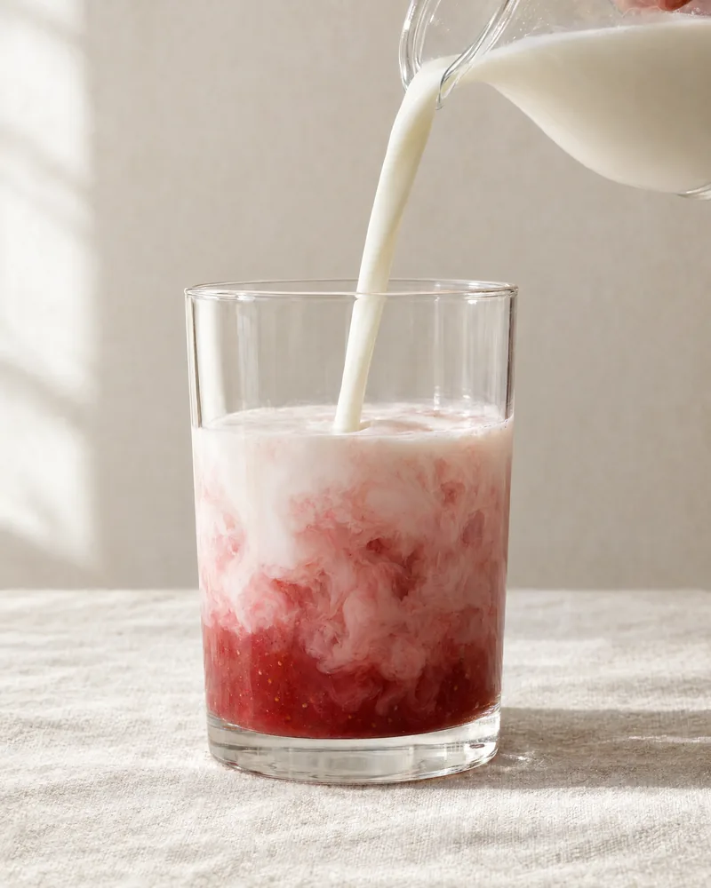
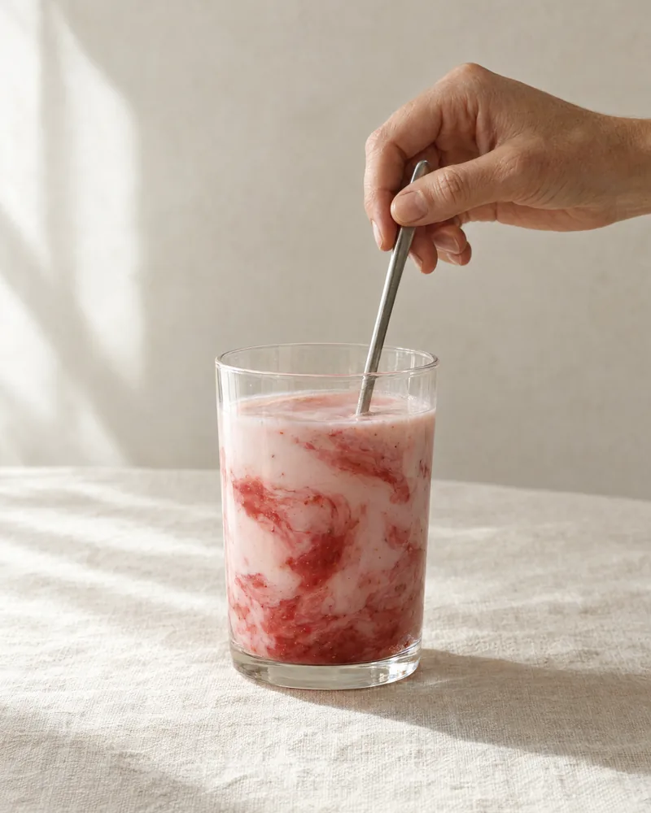
ほかの楽しみ方
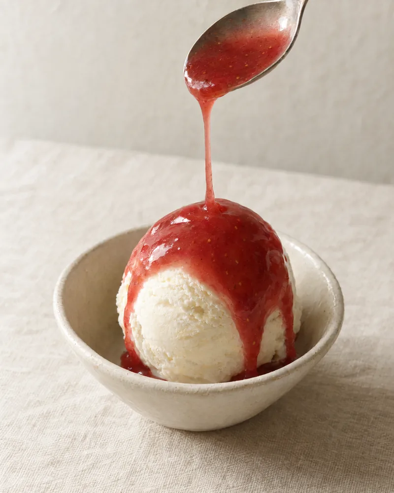
ミルクアイスにかける

泡立てた生クリームに混ぜて、
パンに塗る
ヨーグルトに混ぜる

紅茶に混ぜる

炭酸水で割る
つくり手のおすすめは、ミルクアイスなどにかけて食べる使い方です。いちごミルクにするより少ない量で、古都華の味を楽しめるからです。
画像は盛り付けのイメージです。
製品情報
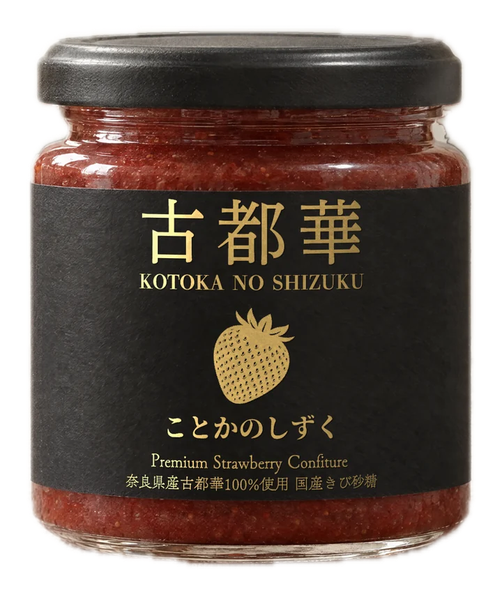
| 商品名 | 古都華のしずく |
|---|---|
| 名称 | コンフィチュール（清涼飲料水） |
| 原材料名 | いちご（古都華）、きび砂糖、有機レモン果汁／香料 |
| 内容量 | 180g |
| 賞味期限 | 瓶の下部に記載（開封前） |
| 保存方法 | 直射日光・高温多湿を避けて保存（開封後は要冷蔵） |
| 栄養成分表示 （100gあたり） | エネルギー177kcal、タンパク質0.6g、脂質0.6g、炭水化物42.3g、食塩相当量0.0g |
| 製造・販売 | SAT株式会社 奈良営業所（奈良県奈良市佐保台西町143-1） |
原料由来の沈殿物や時間の経過による色の変色などが生じる場合がありますが、品質には問題ありません。
よくある質問
いちごミルクは、
どのくらいの割合でつくればいいですか。
古都華のしずく1に対して、牛乳4〜5が目安です。お好みで調整してください。
ジャムとはどう違いますか。
牛乳や炭酸水などの飲みものと混ぜて楽しめるように、清涼飲料水の規格でつくっています。アイスやデザートのフルーツソースとしても使えます。
開けたあとは、
どう保存すればいいですか。
冷蔵庫で保存して、できるだけお早めにお召し上がりください。
沈殿物や色の変化が
出ることはありますか。
原料由来の沈殿物や、時間の経過による色の変化が出ることがあります。品質には問題ありません（ラベルの注意書きより）。
ふるさと納税の返礼品は、
贈答用の箱に入って届きますか。
2本セット（寄附金額22,000円）は、贈答用の箱と袋に入れてお届けします。楽天ふるさと納税とふるさとチョイスで申し込めます。1本の返礼品（10,000円）は簡易包装です。どちらもレシピカードが付きます。